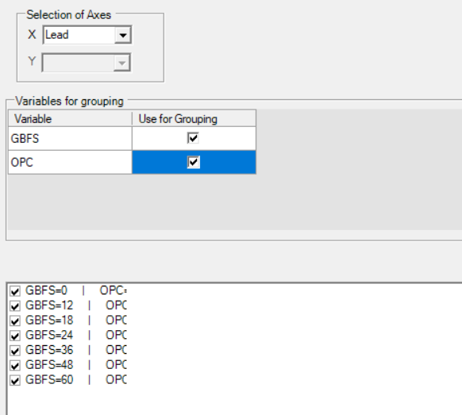

Tutorial - Leaching of binary cement system - Parametric study
Tutorial TL_Binary - Leaching of blended cements - Different GBFS replacement levels
Description
Calculate the leaching of hydrated blended cement systems (Ordinary Portland cement is replaced by up to 60% GBFS) when 100 g blended cement (water/cement ratio of 0.5 and at a temperature of 25°C) is leached with a HCl solution at pH 3. The CEM I oxide composition is taken from the Lothenbach and Winnefeld (2006) (their table 1); the GBFS oxide composition from Adu-Amankwah et al. (2017). Calculations are done in the Ca-Si-Al-S-Mg-C-Na-K system.
You will learn to
Use the template to calculate leaching of hardened cement paste - parametric study
Template - Hydrates_30_Leaching_General
Depends on
Tutorial for parametric study - Blending OPC with 0-60% GBFS (reaction path)
Tutorial for leaching of a single cement system - Leaching of CEM-I - OPC
Step 1 – Create simulation from template for leaching calculation
Go to Project Manager 
Select the project in the bottom panel
Go to Templates tab in the top panel
Select the template “” (See Hydrates_30_Leaching_Blending_General)
Click the “Create new from template” button 
The Metadata dialogue window opens.
Define the name of the simulation (TL_Binary)
Click OK
The Project Manager is active again.
Select the simulation (TL_Binary) and click Select
Step 2 – Define the problem
Go to the Global Definitions input tab
Go to the Global Variables
Define the parametric problem
Select the first record (default case)
Change the case name in the Name column (BlendingGBFS)
Optionally adapt the description in the Description column.
Click on Select Mode ( ) icon
) icon
Select the Parameters panel
Select Cement::Clinker::Amount
Select GBFS::Amount
Select the Values panel
Set Number of Steps to 10 (replacements in steps of 6% GBFS)
Set the starting and end point of:
Cement::Clinker::Amount to, respectively 100 and 40
GBFS::Amount to, respectively 0 and 60
Change value of Cement::Leaching::Step10 to 300 (resulting in a total amount of solution of 400 L)
Define the leaching problem
et Cement::Leaching::Cl to 1E-3 (Cl will be used as the charge-balancing element. A value as low of 1E-15 mol/L may lead to numerical convergence issues in PHREEQC. 1E-3 mol/L is a better starting condition to ensure numerical convergence).
Set Cement::Leaching::pH to 3
Select Cl from the drop down list of Cement::Leaching::Charge$
Run the problem 
Step 3 – Make a plot of the volume % as a function of L/S (g/g-
Go to the Graph Workspace 
Graphs for different replacement levels
Go to Select

For a selected number of output variables (dependent on template - see Hydrates_30_Leaching_Blending_general), the variables with different values are indicated (Lead, GBFS and OPC in this example).
The Lead is selected for the variable along the X-axis, but another variable can be selected from the dropdown list.
The values of the other variables are used to define several groups - an automated selection of 7 combinations of GBFS and OPC is proposed here.
Select Navigation tree 
Select the variable pH - 7 figures will be generated.
Use the symbols < and > to visualize the different graphs.
to be completed: movie, tabbed.
to be completed: change the selection
Graphs at different degradation states
Go to Select
Change the X-variable to GBFS
Deselect OPC in table for Variables for grouping
Select Lead in table for Variables for grouping
Select a number of amounts of added water
Click Apply
Select Navigation tree
Click Update the plot